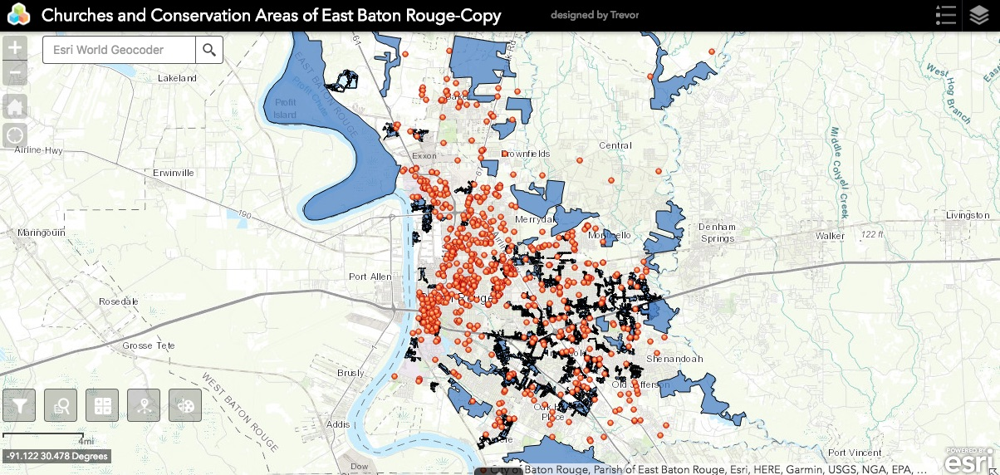
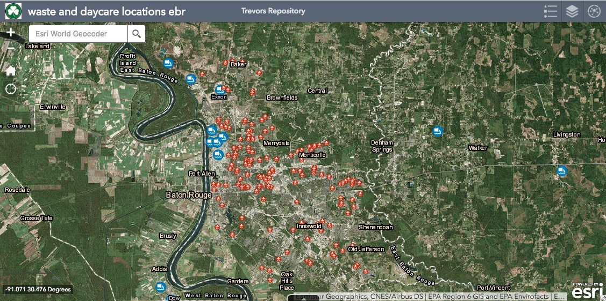
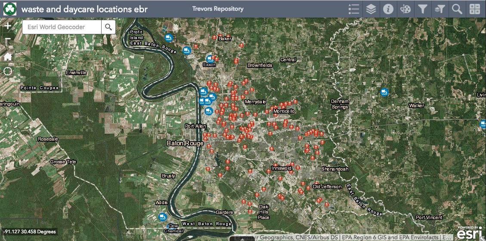

Trevor's Website
Shamrocks and Shenanigans

Shamrocks and Shenanigans
A storymap for a fun night out in Baton Rouge. The map visits Baton Rouge night life spots like Ivar's, Happy's, Fred's, and Pluckers
Incident Report Map of Louisiana State University which denotes Dead Animal, Pothole, Manhole, Street Light, & Street Sign Reports.
Web map with information regarding churches and conservation areas within East Baton Rouge Parish
Web map with information regarding locations of Waste/HAZ waste removal sites and Daycare locations in East Baton Rouge Parish
Web map with information regarding locationsof Waste/HAZ waste removal sites and Daycare locations in East Baton Rouge Parish
